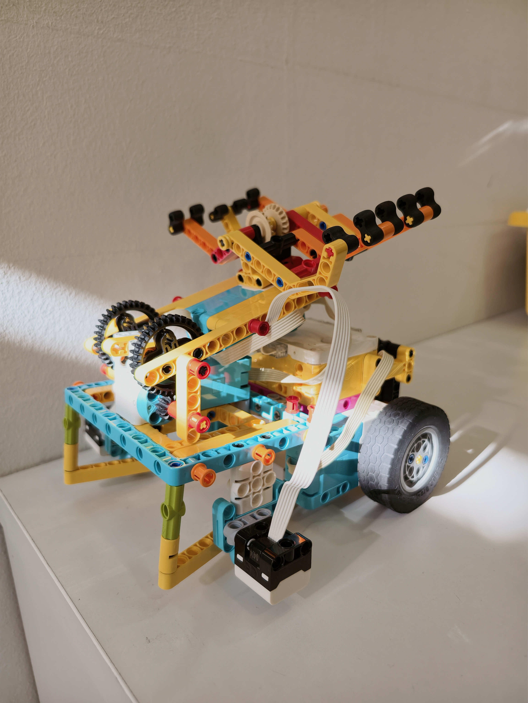
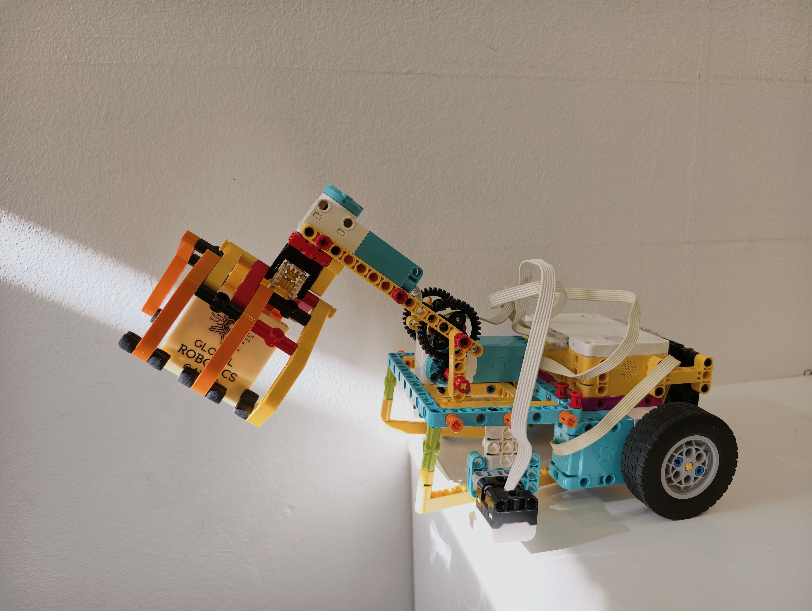

Robotics Competition
National Robotics Competition 2026 - Upper Primary Category. Exploring food sustainability through robotics and LEGO innovation.
Coached three teams for NRC 2026, with two teams advancing to the finals and winning awards.
LEGO SPIKE Prime robot designed and built by me. Won 1st place for Best Robot Performance Award.


Watch the robot complete the NRC 2026 mission run.
Presentation scripts prepared for the FLL Explore competition.
Slide decks used for the NRC 2026 presentation.
A custom Pybricks framework I designed featuring PID gyro control, line following, black-line detection, smooth motion, and reusable competition functions. This code powered the robot to achieve 465/570 points.
from pybricks.hubs import PrimeHub
from pybricks.pupdevices import Motor, ColorSensor
from pybricks.tools import StopWatch
# Robot Configuration
Hub = PrimeHub()
LeftWheel = Motor(Port.F)
RightWheel = Motor(Port.B)
# PID Movement Control
MoveProportionalGain = 1
MoveDerivativeGain = 0.5
def Gyro(Facing, Speed):
Error = HeadingError(Facing)
Correction = Error * GyroProportionalGain \
+ (Error - LastError) * GyroDerivativeGain
LeftWheel.dc(LimitPower(-Speed - Correction))
RightWheel.dc(LimitPower(Speed - Correction))
# Smooth acceleration & deceleration
def RampPower(TargetPower, CurrentDegrees, TotalDegrees):
...
# Gyroscope driving
def GyroDegrees(Facing=0, Speed=80, Degrees=360):
...
# PID Line Following
def LineFollowDegrees(
SensorPort=Port.C,
Speed=50,
Degrees=360,
Kp=1.2,
Kd=8):
...
# Automatic black-line detection
def DriveUntilEitherBlack(
Facing=0,
Speed=25):
...
# Robot alignment
def SquareOnBlackLine():
...
# Complete checkpoint navigation
def BlackLineCheckpoint():
...